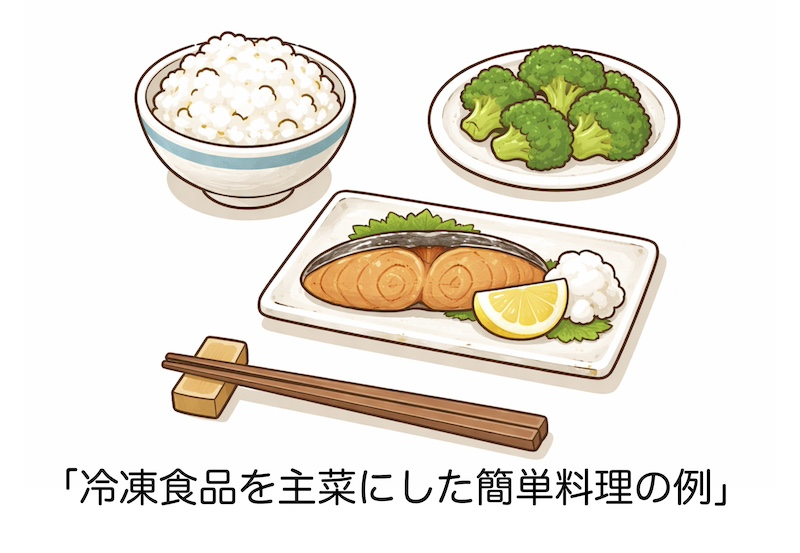

公開日：2026年5月｜最終更新：2026年5月
高齢者の健康維持において、「低栄養の予防」は非常に重要な課題です。低栄養とは、「食事量が不足し、体に必要な栄養が十分に取れていない状態」を指します。
特に問題となるのが「たんぱく質不足」です。年齢とともに食事量が減少すると、肉や魚などの主菜を十分に摂らなくなり、「筋肉量の低下（サルコペニア：加齢による筋肉量の低下）」や「体力低下」の原因となります。
ここで、手軽に利用できる「冷凍食品」の有効性について考えてみましょう。
高齢になると
などの理由で、十分な食事を準備することが難しくなる場合があります。
このような場合に、「冷凍食品を上手に利用することは有効な方法の一つ」です。
近年、日本の冷凍食品は品質が大きく向上しています。急速冷凍技術の発達により、味や栄養の劣化が少ない食品が多くなっています。
また、冷凍食品には次のような利点があります。
そのため、調理の負担を減らしながら、「安定して食事を確保する手段」として役立ちます。
高齢者の食事では、「主菜（たんぱく質源）」を確保することが大切です。
例えば、冷凍食品には
などがあり、これらを利用することで簡単に主菜を用意することができます。
例えば次のような簡単な食事でも、栄養バランスは大きく改善します。

このように、「冷凍食品を主菜の確保に利用すること」が低栄養予防のポイントになります。
冷凍食品には、以前は「加工食品で体に良くない」というイメージもありました。しかし、冷凍食品は単に保存方法の一つであり、必ずしも栄養価が低いわけではありません。
むしろ野菜などでは「収穫後すぐに冷凍されるため、栄養が保たれる場合もあります。」
重要なのは、冷凍食品だけに頼るのではなく
を組み合わせて、バランスのよい食事にすることです。
高齢者では、食事量の減少により低栄養が起こりやすくなります。
その対策として、冷凍食品は「手軽にたんぱく質を補うための有用な食品」と言えます。
無理に毎日調理を頑張るよりも、冷凍食品を上手に利用して安定して食事をとることが健康維持につながります。
冷凍食品は「手抜きの食事」ではなく、「健康を支える便利な食事の工夫の一つ」と言えるでしょう。
参考文献
※本ページは公的機関および学会の情報をもとに作成しています。